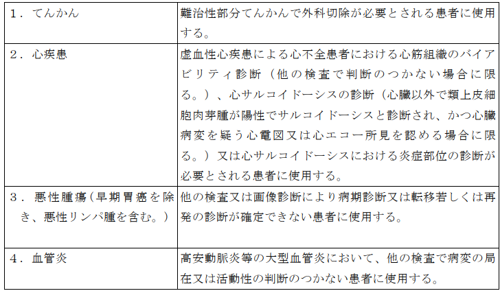

１ 15Ｏ標識ガス剤を用いた場合（一連の検査につき） 7,000点
２ 18ＦＤＧを用いた場合（一連の検査につき） 7,500点
３ 13Ｎ標識アンモニア剤を用いた場合（一連の検査につき） 9,000点
注
１ 15Ｏ標識ガス剤の合成及び吸入、18ＦＤＧの合成及び注入並びに13Ｎ標識アンモ
ニア剤の合成及び注入に要する費用は、所定点数に含まれる。
２ 別に厚生労働大臣が定める施設基準に適合しているものとして地方厚生局長等
に届け出た保険医療機関において行われる場合に限り算定する。
３ 別に厚生労働大臣が定める施設基準に適合しているものとして地方厚生局長等
に届け出た保険医療機関以外の保険医療機関において行われる場合は、所定点数の100分の80に相当する点数により算定する。
４ 新生児、３歳未満の乳幼児（新生児を除く。）又は３歳以上６歳未満の幼児に
対して断層撮影を行った場合は、新生児加算、乳幼児加算又は幼児加算として、1,600点、1,000点又は600点を所定点数に加算する。ただし、注３の規定により所定点数を算定する場合においては、1,280点、800点又は480点を所定点数に加算する。
通知
(１) ポジトロン断層撮影は、撮影の方向、スライスの数、撮影の部位数及び疾患の種類等に
かかわらず所定点数のみにより算定する。
(２) 18ＦＤＧを用いたポジトロン断層撮影については、てんかん、心疾患若しくは血管炎の診
断又は悪性腫瘍（早期胃癌を除き、悪性リンパ腫を含む。）の病期診断若しくは転移・再発の診断を目的とし、次の表に定める要件を満たす場合に限り算定する。
(３) 18ＦＤＧ製剤又はアミロイドＰＥＴイメージング製剤を医療機関内で製造する場合は、
18ＦＤＧ製剤又はアミロイドＰＥＴイメージング製剤の製造に係る衛生管理、品質管理等については、関係学会の定める基準を参考として、十分安全な体制を整備した上で実施すること。なお、高安動脈炎等の大型血管炎の診断に用いる18ＦＤＧ製剤については、当該診断のために用いるものとして薬事承認を得ている18ＦＤＧ製剤を使用した場合に限り算定する。
(４) アミロイドＰＥＴイメージング製剤を用いたポジトロン断層撮影については、厚
生労働省の定めるレカネマブ（遺伝子組換え）製剤に係る最適使用推進ガイドラインに沿って、アルツハイマー病による軽度認知障害又は軽度の認知症が疑われる患者等に対し、レカネマブ（遺伝子組換え）製剤の投与の要否を判断する目的でアミロイドβ病理を示唆する所見を確認する場合に、本区分「２」の18ＦＤＧを用いた場合（一連の検査につき）、本区分「注４」の乳幼児加算及び区分番号「Ｅ１０１－５」 乳房用ポジトロン断層撮影を合算した所定点数を準用して患者１人につき１回に限り算定する。ただし、レカネマブ（遺伝子組換え）製剤の投与中止後に初回投与から 18 か月を超えて再開する場合は、上記のように合算した点数をさらに１回に限り算定できる。なお、本撮影が必要と判断した医学的根拠を診療報酬明細書の摘要欄に記載すること。
(５) 当該画像診断を実施した同一月内に悪性腫瘍の診断の目的で区分番号「Ｅ１００」
シンチグラム（画像を伴うもの）（ガリウムにより標識された放射性医薬品を用いるものに限る。）を実施した場合には、主たるもののみを算定する。
(６) ポジトロン断層撮影と同時に同一の機器を用いて行ったコンピューター断層撮影
の費用はポジトロン断層撮影の所定点数に含まれ、別に算定できない。
(７) 15Ｏ標識ガス剤を用いた場合に当該画像診断に伴って行われる血液ガス分析の費用
は所定点数に含まれ、別に算定できない。
(８) ターゲットガス（窒素、酸素、二酸化炭素）等の15Ｏ標識ガス剤の合成及び吸入に
係る費用並びに18ＦＤＧ、13Ｎ標識アンモニア剤並びにアミロイドＰＥＴイメージング製剤の合成及び注入に係る費用は所定点数に含まれ、別に算定できない。
(９) 13Ｎ標識アンモニア剤を用いたポジトロン断層撮影については、他の検査で判断の
つかない虚血性心疾患の診断を目的として行った場合に算定する。負荷に用いる薬剤料は所定点数に含まれ、別に算定できない。
(10) 放射性医薬品の管理に当たっては、専門の知識及び経験を有する放射性医薬品管理
者を配置することが望ましい。
(11) アミロイドＰＥＴイメージング製剤を用いたポジトロン断層撮影による画像診断、
区分番号「Ｅ１０１－３」に規定するアミロイドＰＥＴイメージング製剤を用いたポジトロン断層・コンピューター断層複合撮影又は区分番号「Ｅ１０１－４」に規定するアミロイドＰＥＴイメージング製剤を用いたポジトロン断層・磁気共鳴コンピューター断層複合撮影のうち、いずれか複数を、レカネマブ（遺伝子組換え）製剤の投与の要否を判断するに当たり実施した場合には、いずれか主たるもののみを算定する。
(12) アミロイドＰＥＴイメージング製剤を用いたポジトロン断層撮影は、厚生労働省の
定めるレカネマブ（遺伝子組換え）製剤に係る最適使用推進ガイドラインに沿って、次のいずれにも該当する医師が常勤で複数名配置されている場合に算定する。
ア 認知症疾患に関する専門の知識並びに 10 年以上の軽度認知障害の診断及び認知症
疾患の鑑別診断等の専門医療を主たる業務とした臨床経験を有する常勤の医師であること。
イ アミロイド関連画像異常の有無を判断した上で、臨床症状の有無と併せてレカネマ
ブ（遺伝子組換え）製剤の投与継続、中断又は中止を判断し、必要な対応が可能な医師であること。
ウ 関連学会等が実施する磁気共鳴コンピューター断層撮影によるアミロイド関連画
像異常の読影、アルツハイマー病の病態及び診断並びにレカネマブ（遺伝子組換え）製剤投与対象患者及びレカネマブ（遺伝子組換え）製剤による治療に関する研修を修了していること。
(13) アミロイドＰＥＴイメージング製剤を用いたポジトロン断層撮影は、厚生労働省の
定めるレカネマブ（遺伝子組換え）製剤に係る最適使用推進ガイドラインに沿って、次のいずれにも該当する医療機関で行われた場合に算定する。
ア 認知症疾患医療センター又は認知症疾患医療センターと連携している施設である
こと。
イ レカネマブ（遺伝子組換え）製剤を投与する患者について、初回投与時及び初回投
与後に、当該患者の背景情報の把握並びに安全性及び有効性を評価するための調査を確実に実施できる施設であること。
(14) アミロイドＰＥＴイメージング製剤を用いたポジトロン断層撮影は、(12)及び(13)の
いずれにも該当する医療機関と連携している施設で行われた場合であっても算定できる。